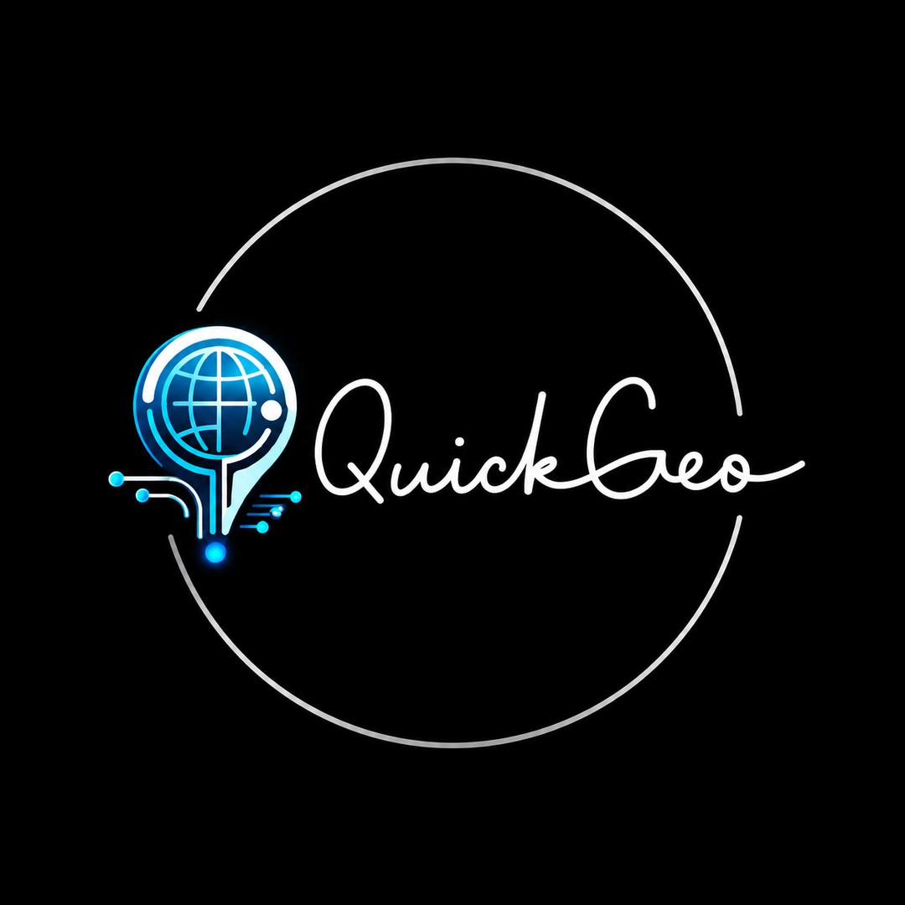

Quickgeo
Quickgeo
About Quickgeo
Your live window into global geopolitics.
Quickgeo is a live news channel dedicated to geopolitics — covering the latest developments in international relations, global conflicts, diplomatic affairs, political power shifts, and world affairs that shape our planet.
What We Cover
Our Mission
We believe geopolitical knowledge should be accessible to everyone. Quickgeo delivers timely updates for analysts, students, journalists, and curious minds who want to understand the forces shaping our world.
How We Source Our Updates
Quickgeo compiles short updates from regional Telegram channels and other public channels close to the events they report. Posts are brief summaries or translations of what those channels publish, usually with their photos or video attached, and are categorised so you can follow a region or topic.
Early reports from the field can be incomplete, and some turn out to be wrong. Treat fast-moving items, especially claims about casualties, strikes or troop movements, as unconfirmed until they are reported by multiple independent sources.
Corrections and Content Requests
If you spot an error, or you own content that appears on Quickgeo and want it credited or removed, tell us through the contact page. We review every request and correct or remove posts we find to be wrong or published without permission.
How the Site Works
Posts are published by the Quickgeo team. Readers can react to posts, save them for later, and share individual updates. The site is available in 10 languages, supports dark mode, and can be installed as an app on your phone.
Contact
Have a tip, a correction, or want to get in touch? Visit our Contact page.